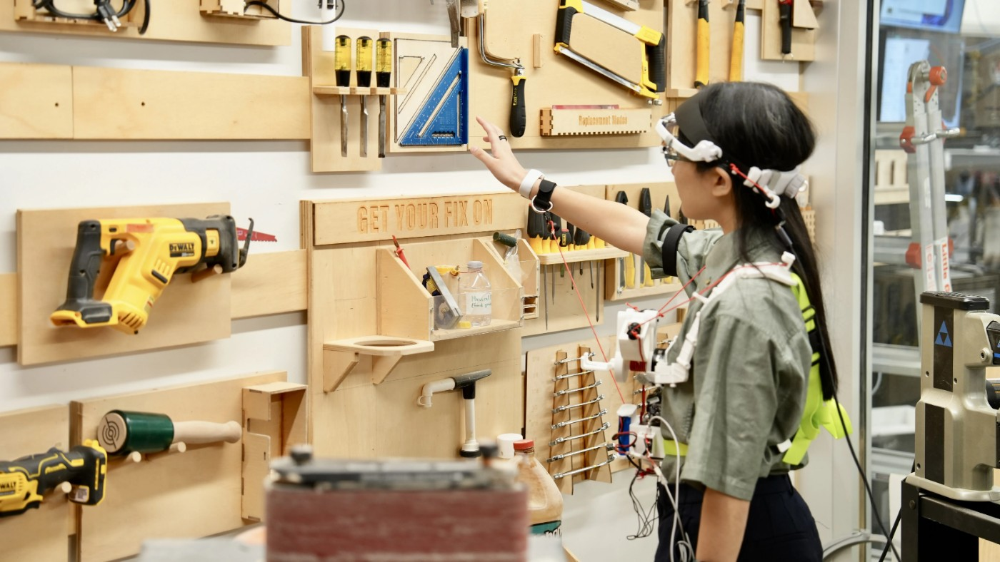

在动作完成前介入
顺序操作的错误有时发生在下一步即将开始时：人已经看向或伸向另一个物体，口头提醒还没来得及起作用。ProtoCall把视线和腕部动作作为输入，通过头胸部穿戴结构给出身体提示。大学报道描述的原型采用便携Jetson Thor和视觉语言处理，不是仅在屏幕上显示下一步。它把提醒提前到动作过程中，也增加了更直接的控制关系：系统不只告诉人哪里错了，还会改变身体运动。因此评估既要看错误有没有减少，也要看用户能否理解和拒绝不合适的提示。
ProtoCall · 大学研究报道／可穿戴原型

顺序操作的错误有时发生在下一步即将开始时：人已经看向或伸向另一个物体，口头提醒还没来得及起作用。ProtoCall把视线和腕部动作作为输入，通过头胸部穿戴结构给出身体提示。大学报道描述的原型采用便携Jetson Thor和视觉语言处理，不是仅在屏幕上显示下一步。它把提醒提前到动作过程中，也增加了更直接的控制关系：系统不只告诉人哪里错了，还会改变身体运动。因此评估既要看错误有没有减少，也要看用户能否理解和拒绝不合适的提示。
头部拉索提示可以把注意力引向另一位置，腕部提示则在伸手过程中阻止继续靠近错误对象。这两种输出提供的信息并不相同：前者可能帮助学习整个物品布局，后者更直接表达当前动作不该继续。大学报道的十六人研究在十五步烹饪主题任务中比较了反馈，并观察到学习与控制感之间的取舍。它不是对任意技能的通用排序。新手是否需要明确方向、熟练者是否只需短促制止，应结合任务与个人反应判断，而不是用同一强度覆盖所有人。
训练设备可以让当下操作更顺利，也可能让人依赖提示。真正要判断是否学会，需要撤掉辅助后再次完成任务，并检查顺序记忆、迁移到新布局的能力，以及错误发生时能否自行纠正。大学报道提到后续独立操作表现，但有限样本和任务不足以说明长期保持或复杂工作现场的效果。一个低成本后续验证可固定教学时间，比较文字或语音提示、身体提示与无提示练习，再隔一段时间重测。这里提出的是验证路线，不是该团队已经完成了这些额外实验。
原始大学报道提供了系统组成和研究概况，作者主页确认题目与UIST二〇二六归属；完整ACM论文页面在本次访问中返回禁止访问，因而不能声称已审查全部统计、排除标准和实验安全细节。产品化还需要处理误识别时的松脱、不同身形的佩戴和长时间舒适度，并明确谁设定操作规则。物理康复和工业训练是作者提出的应用方向，不是已经获临床或工厂验证的用途。没有核实售价、商业供货或长期部署，图示应明确标注研究原型。